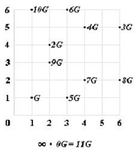

Diffie-Hellman con curva elı́ptica
Diffie-Hellman: protocolo para intercambio de claves
Sea E una curva elı́ptica con G un generador de un subgrupo cı́clico de orden prima p
- Alice elige un entero secreto x A ; Bob elige x B
- Las claves públicas correspondientes son
- YA = xA · G
- YB = xB · G
- La clave compartida es
- K = xA · xB · G
- Alice calcula K = xA · YB
- Bob calcula K = xB · YA
Ejemplo:
Si tenemos la curva:
y^2 = x^3 +x - 1, sobre Z7,con G=(1,1)

- Alice elige xA = 4; calcula YA = 4 · G = (4,5)
-
Bob elige xB = 9; calcula YB = 9 · G = (2,3)
- Alice calcula K = xA · YB = 4 · (2,3) = (6,5)
-
Bob calcula K = xB · YA = 9 · (4,5) = (6,5)
- K = xA · xB · G = 4 · 9 · G = (36 mod 11) · G =
- K = 3 · G = (6,5)